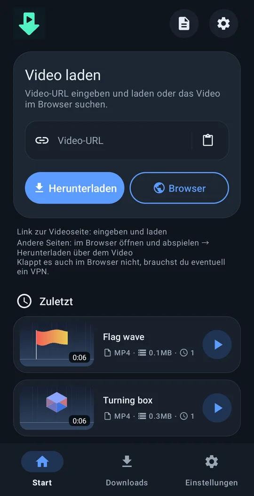
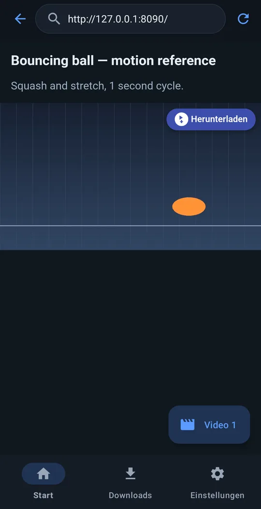
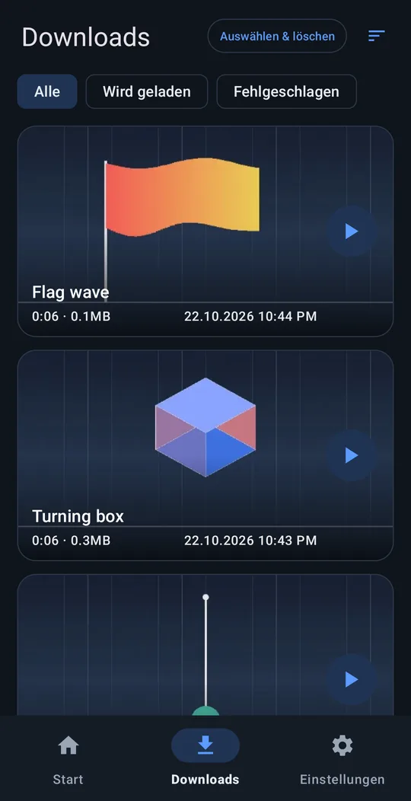
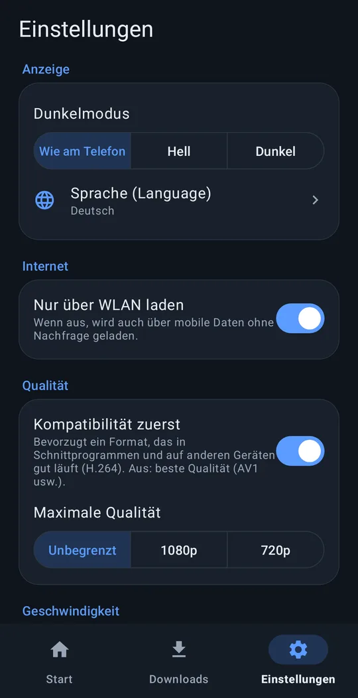

Jedes Video aufs Handy.
Link einfügen und herunterladen – oder die Seite im eingebauten Browser öffnen, das Video abspielen und oben auf ⬇ Herunterladen tippen.
Android 8.0+ · 64‑Bit‑ARM · kostenlos · ohne Konto
So funktioniert es




Funktionen
Link einfügen
Funktioniert mit den meisten beliebten Videoseiten.
„Herunterladen“ direkt am Video
Im eingebauten Browser erscheint über dem abgespielten Video eine Schaltfläche „Herunterladen“ – klappt auch auf vielen Seiten, bei denen der Link nicht reicht.
Bereit für den Schnitt
Gespeichert in Movies/VideoRef. „Kompatibilität zuerst“ wählt H.264 + AAC, damit Schnitt-Apps die Datei sofort öffnen.
Läuft im Hintergrund
Lädt auch bei ausgeschaltetem Bildschirm weiter. „Nur über WLAN laden“, maximale Auflösung.
10 Sprachen
English, 한국어, 简体中文, 繁體中文, 日本語, Español, Deutsch, Français, Português (Brasil), Русский. Helles / dunkles Design.
Nichts wird an uns gesendet
Kein Tracking, kein Konto.
Installation
- Lade die APK über die Schaltfläche oben (oder unter Releases auf GitHub) herunter.
- Öffne die APK auf deinem Handy.
- Erlaube bei Nachfrage deinem Browser oder deiner Datei-App, unbekannte Apps zu installieren, und tippe auf Installieren.
Eine Google-Play-Ausgabe kommt bald. Wegen der Play-Richtlinien unterstützt sie weniger Seiten und aktualisiert ihr Download-Programm nur mit App-Updates. Beide Ausgaben lassen sich gleichzeitig installieren.
just downloader unterstützen
just downloader ist kostenlos. Wenn es dir Zeit gespart hat, hilft eine kleine Unterstützung beim nächsten Update.
Häufige Fragen
Ist es wirklich kostenlos?
Ja. Kostenlos und quelloffen (GPL‑3.0). Keine Anmeldung, keine Testphase.
Werden meine Daten gesendet?
Keine personenbezogenen Daten. An den Entwickler geht nichts, außer du schickst selbst einen Fehlerbericht. Datenschutzerklärung
Welche Seiten funktionieren?
Bei den meisten beliebten Videoseiten reicht der Link. Klappt das nicht, öffne die Seite im eingebauten Browser, spiele das Video ab und tippe auf „Herunterladen“. Mit DRM geschützte Videos (Bezahl-Streamingdienste) lassen sich nicht speichern.
Etwas funktioniert nicht?
Einstellungen → Hilfe → Problem melden erstellt eine Mail an support@4dir.net mit angehängtem App-Protokoll. Mit GitHub-Konto kannst du auch ein Issue anlegen: GitHub.